Element E/F
Application of STEM Principles and Practices
I. Introduction
Problem Statement
In the United States, 44.13% of amateur golfers have 14.9+ handicaps and experience difficulty when reading the slopes of greens.1 This difficulty arises from novice golfers lacking experience with reading breaks and from courses having different types of cuts for the greens. This problem leaves high-handicap golfers unsatisfied with themselves, as they consistently average four to five three-putts per 18 holes and end up shooting high scores. Addressing this issue requires that golf stakeholders, performance criteria, and functional requirements be accounted for. These different pieces of criteria ensure that the solution is extremely accurate, consistently reliable, and applicable to a large portion of the golfing industry. Additionally, several different designs were sketched and analyzed with the goal of finding a singular concept that will outcompete the current solutions on the market. Further completing the ideal objective of creating a fully functional and efficient test plan that is thoroughly put into action, with a result of a large collection of data to be used for analysis. Thus demonstrating the importance of addressing the STEM principles incorporated into the final design by going through the different types of analysis, evaluation, and design of the most accurate & efficient prototype.
II. STEM
The STEM section consists of an in-depth analysis of how the final prototype integrates science, technology, engineering, and mathematics into assisting novice golfers through the ability to read slope on a putting green. By applying each of these principles individually into the design process, a solution is created that is viable to a large variety of amateur golfers. Each principle has a certain significance to the project with science ensuring correct materials, technology determining the correct software, engineering checking if the structure & usability is correct and mathematics to ensure correct device performance.
Science
This science section consists of the different materials used for the final prototype, with the addition of the hypothesis that was incorporated into determining how efficient and accurate the device could be.
Hypothesis
If the prototype is constructed perfectly with a full structured frame, an accurate/functional accelerometer, and a complete operational digital display that provides slope output, then a prototype will be finalized that can measure green slope with a +/- 2 degree accuracy and will provide golfers with putting feedback.
Materials
| Material | Pros | Cons |
|---|---|---|
| PLA (Polylactic Acid) | Relatively lightweight compared to other types of materials for 3D printing filament Easy to use (meaning efficient 3D printing) Cost-effective when contrasted to other filaments |
The filament is partially brittle when used on hard materials outdoors, such as concrete Filament causes the device to be limited to being used on grass Very small chance, but it can deform if temperatures are extreme |
| Arduino Microcontroller | Not difficult to code compared to devices such as raspberry pi Supports multiple other electronic components at the same time (being the servo motor, digital display, and accelerometer) |
Slightly sensitive to harsh weather conditions and water Requires some form of prior coding knowledge within the Arduino software |
| Accelerometer MPU6050 | Provides real-time feedback on the slope and angle that the component is at Easily functions with Arduino |
Could be sensitive to sudden shaking and quick movements from things such as vibrations |
| Wiring and Connectors for Arduino | Many different types of wiring that can be easily used Very flexible and easy to replace if damaged |
Pins can easily be damaged since the metal ends are fragile Exposed wires cause clutter within the device and messiness |
| Digital Display | Electronically provides the real-time output of the specific slope based on data from the Arduino microcontroller Enhances the overall experience of the user |
Lighting may make it difficult to read what the display is showing, while outside in the sun Can also be damaged by water or materials |
Technology
The technology sections consist of the different online software that were used during both the design and testing phases for the prototype. Also further describes the application that the technology has on the other principles and the real-world examples.
Tools Used
Fusion 360 - Incorporated during the designing and brainstorming process, where the diagrams of the components are selected and finalized. Also used during the building process, where a 3D case is needed to store all of the electronic components within the putting aid device. A diagram used during the brainstorming process is shown below using the Fusion 360 software.

Multisim - Another piece of technology software that was used to ensure that the systems for the Arduino, OLED display, accelerometer, and laser would fully function after being physically assembled. In addition, using Multisim provided the ability to virtually test the electronic components without having access to the parts in real life. The wiring diagram is shown below with the directions of the voltage, ground, and wiring.

Google Drive - This website has been constantly used during the research and design process and has provided organization and access to data in real time. Also allows all members of the team to have access to inputting information into the reports, and is accessible from anywhere on the internet.
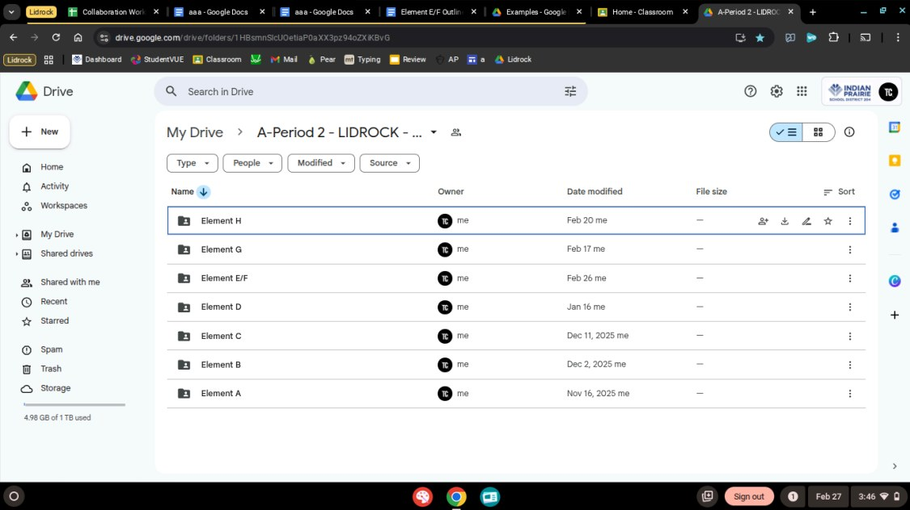
Google Sheets/Docs - Another website that has frequently been incorporated into the engineering process and has been the main source of technology for decision matrices. Below can be seen a screenshot of the Google Sheets being used for a decision matrix, with the addition that the Google Docs are always used for the outline reports.
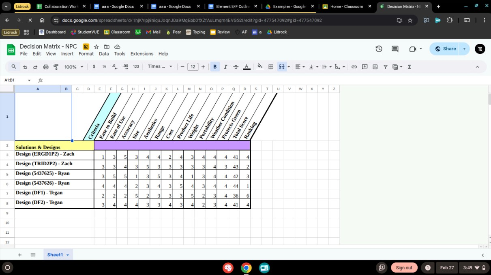
iPhone Digital Angle App - This technology resource incorporates the accelerometer inside the iPhone to measure the precise angle that the phone is at. Thus, having the ability to be used on putting greens to compare against the device prototype that will be constructed.
3D Printer - Another significant technological resource that is used to construct the final prototype is 3D printers, specifically the models through the company UltiMaker known as the 2+, 3, and S7. Every 3D printer model has a flexible build plate and offers an extremely reliable 3D printing experience.2 Below can be seen all three different screenshots of the models used to construct the 3D printing case for the putting aid device.
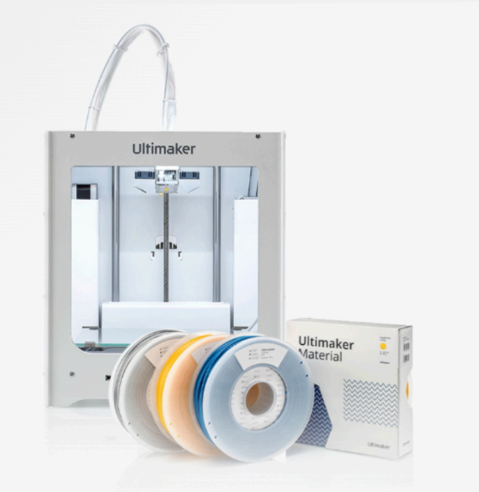
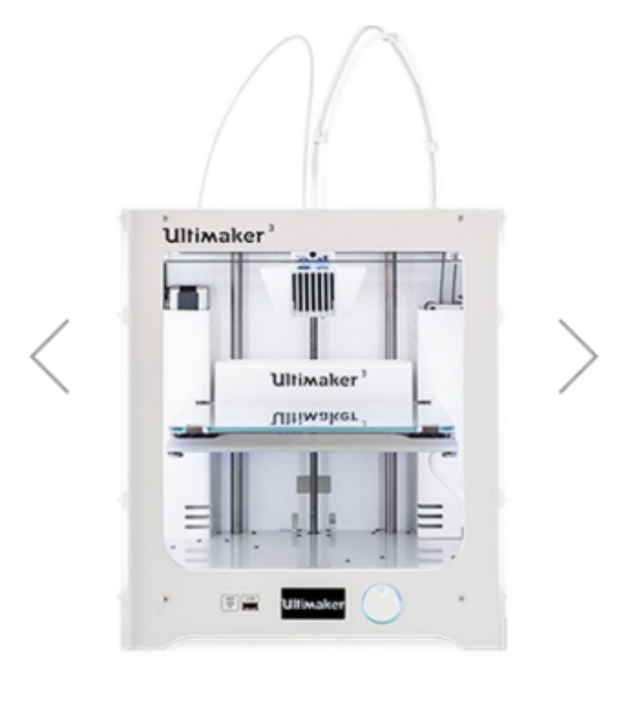
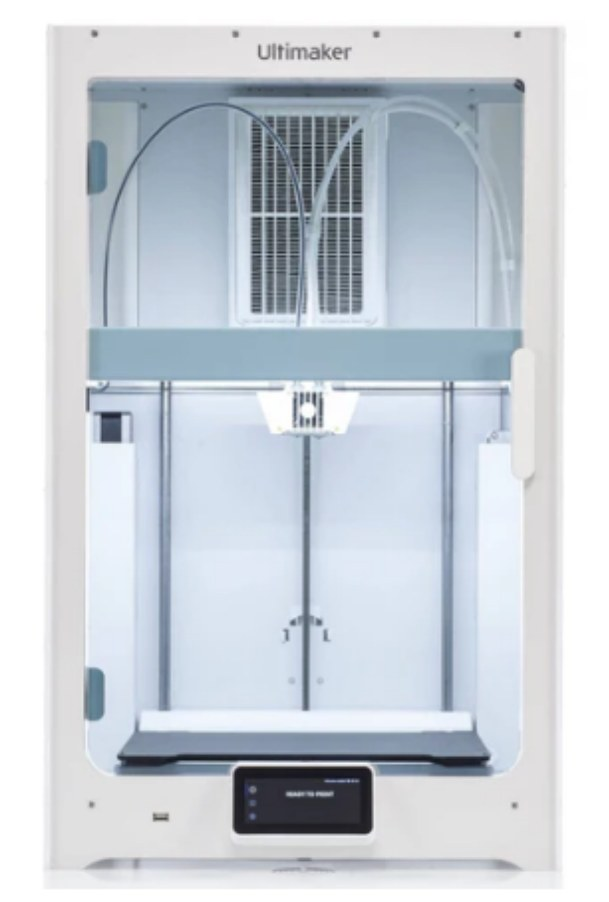
Arduino IDE - Microcontroller programming also plays a significant role in the assembly of the prototype, as it provides the ability for the user to change the input and the output. The IDE specifically will provide feedback from the accelerometer, coordinated laser direction (being a servo motor), and overall program coding. Below can be seen a screenshot of the Arduino IDE that shows how the coding will be both inputted and outputted into the device.
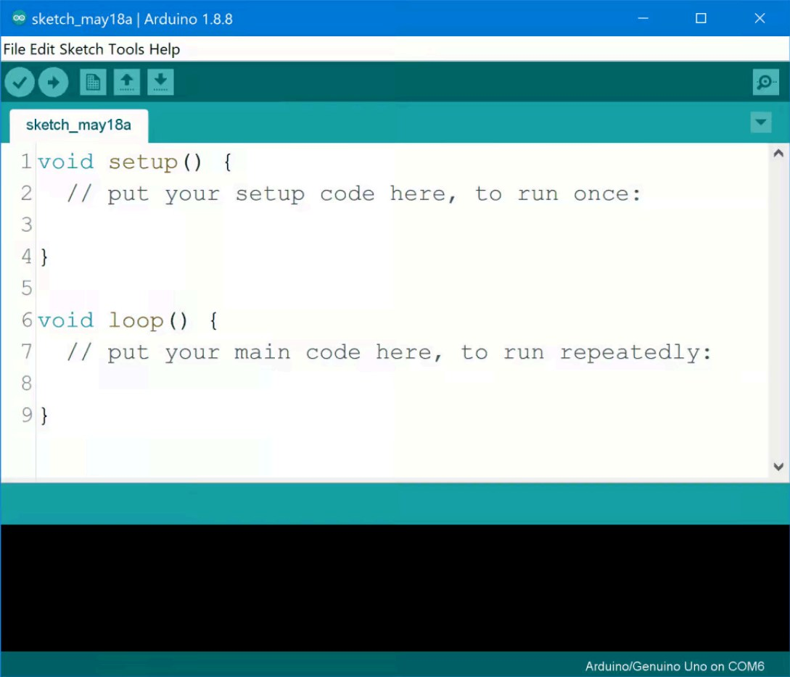
Engineering
The engineering process allows for a smooth and successful production of this device. Following all steps along the way, from brainstorming to designing to the actual development, is detrimental to achieving a successful prototype.
1) Problem statement
The problem statement was the first step in the engineering process. During the Presentation and Justification of the Problem, it was determined what the problem was, how it affects people, and how a solution could make a difference to the golf community (the problem statement is above under the introduction).
2) Design
The design process is where all brainstorming and initial planning begin. This is where sketches and 3D modeling is used to form an idea for a potential solution. Figure 2.11 and Figure 2.12 show some of the designs made during this process.
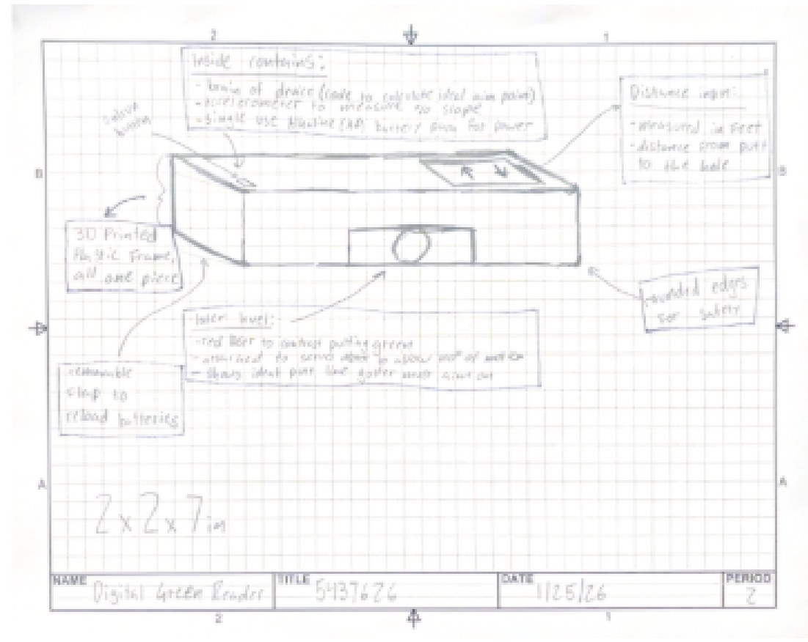
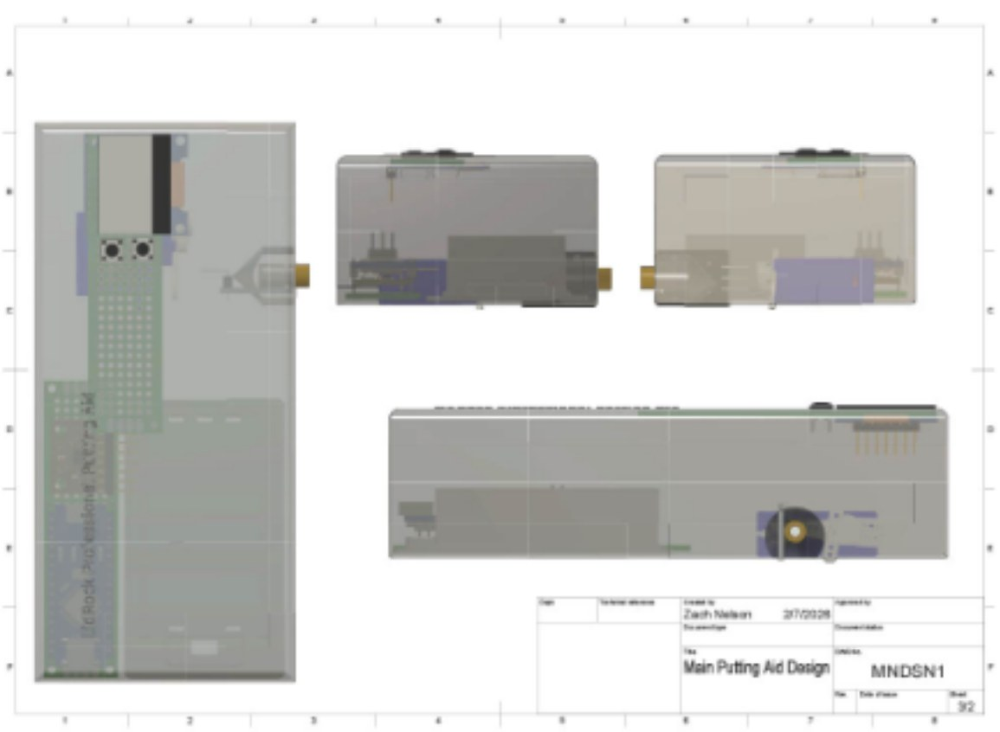
3) Decision
After all the brainstorming was done and there was a large variety of designs, a decision must be made to choose the best design to accomplish the solution to the problem statement. To choose the best decision, it was checked that all solutions met the design requirements, ensuring a solution that achieves a fix to the stated problem statement. Additionally, a decision matrix (see Figure 2.13) was used to finalize the pick for a solution.

4) Development
The next step in the production of this device is its actual development. This is where the previous design is taken and understood when building the first prototype. A bill of materials was first created, which ensured all necessary parts/components were accounted for in the build process. This includes any tools needed to construct these parts/components into the final prototype. Additionally, a build plan was developed to ensure no hiccups during the build process. This accounted for all steps in the build process: 3D printing, wiring, and coding.
5) Testing
Finally, testing is done to ensure the success of the prototype. A testing plan was created to highlight what specifically needs to be tested, where it will be tested, and who will be testing it. This testing plan highlights all initial conditions/constants, dependent, and independent variables. It is also highlighted what qualitative and quantitative data must be gathered from the specific test. Overall, this ensures a device that achieves the solution to the problem statement and that meets all design requirements.
Mathematics
Lastly, the mathematical process was consistently applied throughout the course of the project and was one of the key principles to ensure that the prototype was accurate, reliable, and functioned/operated correctly.
Slope of Green Calculations
- By far the most important aspect regarding mathematics for the final prototype is ensuring that the accelerometer correctly measures the tilt of the device (being the slope of the green).
- By using the slope formula shown below
- Theta = arctan (ay/az)
- Given that ay is the acceleration along the slope direction and az is the acceleration perpendicular to the slope
- Shown below is the calculation in action, given ay=0.17g and az=0.98g
- Theta = arctan(0.17/0.98) = 9.8 degrees
- Current expectations for the final prototype are that this number calculated above is at worst, within 2 degrees of error when compared to the iPhone digital angle app. This app also provides very similar results, but rather a higher model of an accelerometer due to the iPhone's measurement being of better quality and thus more likely to be more accurate.
- In addition, in an ideal world where the device is perfectly flat, the final prototype would be expected to produce the outputs of az=1.00g and ay=0.00g, further giving the arctan of both numbers, with the final theta being 0 degrees (flat).
- The current assumption is that a typical putting green will only have the degree ranges of slope between 1 and 5 degrees. If between this range, it would be given that the number of g for ay would be sin(theta) which thus is simply theta (in radians).
- One ideal calculation of the final prototype with 3 degrees of slope.
- 3 degrees is converted to 0.0524 radians
- Meaning that ay=0.0524g
- When comparing to the sensor accuracy, can do the relative error calculation using a +/- g of 0.01 by doing this calculation
- Relative error = 0.01 / 0.052, which converted into a percentage is around 19
Distance to Hole Calculations
- Without having to use some sort of measuring tape or ruler, the distance between the hole and the putting device can be solved using mathematics.
- Distance can be calculated with this formula:
- Distance = square root ( (x2-x1)^2 + (y2-y1)^2 )
- Here is a calculation given, x1=0feet and y1=0feet with the x2=12feet and y2=16feet
- D = square root ( (12-0)^2 + (16-0)^2 ) = square root (400) = 20 feet
- The intended goal for the final prototype would be for the device to provide accurate data with this margin of error shown above (basically given 20 feet and under).
Battery Life Calculations
- The final design is required to function properly for a minimum of three hours at a time, given the battery.
- The battery can be calculated with the formula below:
- Battery Life (in hours) = Battery Capacity (mAh) / Device Current Draw (mA)
- Example shown here, given that the Battery Capacity = 2000mAh, Device Current = 500mA
- B = 2000 / 500 = 4 hours
- Golf Prototype will require 2 AA batteries
- Standard AA battery : Voltage = 1.5V & Capacity = 2000-2500mAh
- In the final prototype design: Calculations below
- 1.5V + 1.5V = 3.0V
- Capacity remains at 2000mAh
- Approximately (all are estimates), total device (based on components), current drawn in battery shown below
- Arduino: 50mA
- Accelerometer: 5mA
- LCD Display: 150mA
- Laser Module: 100mA
- Total current drawn = 50+5+150+100 = 305mA
- Now for total battery life (hours) calculated for the approximate final design shown below
- Battery Life = 2000mAh / 305mA = 6.56
- Ultimate (ESTIMATE) battery life = 6.56 hours
Volume and Dimensions Calculations
- The prototype device is required to have some form of portability, with the maximum volume being at 700 cubic centimeters.
- Volume calculated with this formula:
- Length x Width x Height
- Showing of calculation in works being Length = 5cm, Width = 2cm, Height = 9cm
- V = 5 x 2 x 9 = 90 cubic centimeters
- Golf Prototype Dimensions based on Fusion 360
- Length = 148mm converted to cm is 14.8cm
- Width = 69mm converted to cm is 6.8mm
- Height = 48.5mm converted to cm is 4.85mm
- The final calculation to find the exact volume that is expected to be the exact same on the final prototype (being a 3D printed case)
- V = L x W x H
- V = 14.8 x 6.9 x 4.85 = 495.282 cubic centimeters
- Proof of final prototype with correct final device parameters shown below in the diagram from Fusion 360.
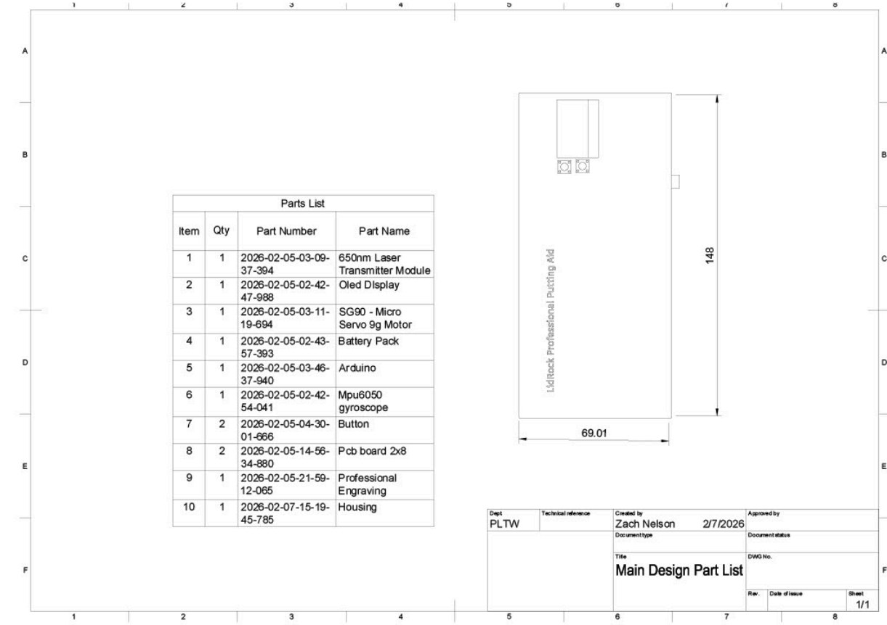
- Dimensions of the prototype will be carefully measured to ensure that the design meets the requirements and has enough space to store all of the components inside.
III. Rules and Regulations
Rules and regulations are put in place to ensure the safety of both the producers and users. Rules and regulations must meet all legal requirements, achieving both the quality of a device and the protection of its users. It must be ensured that all components are safe and secure.
FDA
The FDA ensures the safety of lasers used in different products (this is done through their Center for Devices and Radiological Health (CDRH)). The FDA examines both the hazard classification and enforces the mandatory labeling.3 It must also be ensured that all components function safely and correctly in the desired operating environment.
- This device’s laser falls under class 3R (<5mW)
- This device requires the warning label shown in Figure 3.1
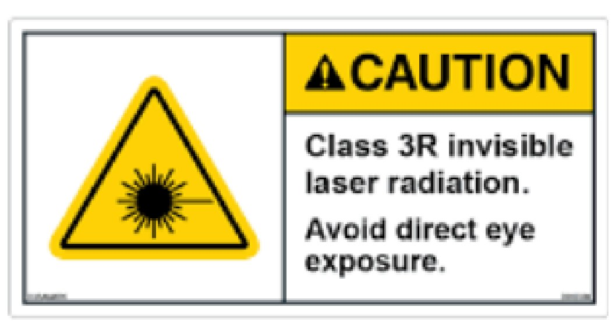
- Since the laser is being moved by a servo, there must be a failsafe to shut down the device in an emergency where the laser could be stuck concentrated at one point.
- With the use of PLA plastic, ensure it is safe from melting/warping in the heat
- Additionally, ensure no batteries or other electronic components overheat during operation
USGA
The USGA ensures all rules of golf are met and maintained in accordance with the United States Golf Association (USGA). USGA Rule 4.3 (Equipment), it highlights what is and is not allowed on the golf course. These rules directly impact a golfer's success on the course; any difficulty meeting these requirements leads to the penalization of the golfer.4
- Must emphasize this device’s use as solely a training aid (not to be used during a golfer's round)
IV. Understanding the Market
In this section, the team analyzed past solutions as well as the demand for golfing aids to get a better understanding of the market for the product. By doing so, it became clear how the solution would fit within the current market of golfing aids, helping the team better understand what is necessary for the device and who the device should be marketed toward.
Market Research, Analysis, and Barriers to Entry
The Global Golf training aids market was evaluated at $1.5 billion as of 2024 and is expected to reach $4.6 billion by 2033.5 The market has a forecasted Compound Annual Growth Rate of 5.7% over the period 2024-2033.5 Lately, there has been a growing emphasis on integrating technology into training aids, primarily through sensors and data analytics. A strong emphasis has been placed on the portability of these training aids, enabling the product to be used anywhere, as well as on their sustainability.6
There is a range of products that address green reading, with notable examples including SurePuttLite Golf Reader, SurePuttPro Green Reader, and Progidora SlopeMaster ProGreenReader. All of these products are very basic slope reading disks with a price tag of around 25 dollars. The solution being created would be able to compete with these devices, as, instead of just showing the slope, it would compute the exact aimpoint and maintain a higher accuracy due to more complex technology. Current devices are very limited in precision on actual greens, require manual input, and have a long setup time. Entry into the market will be moderately hard due to the established trust of long-standing cheap green readers and the USGA rule restrictions forcing the green reader to be more of a practice-only tool. The main barrier, however, would be the difficulty of gaining precise slope measurements while maintaining competitiveness with the price of the cheaper low-tech options.
Users and Buyers
Users
- Amateur Golfers
- Golf Coaches/Instructors
- Indoor golf studio players
Buyers
- Individual golfers
- Parents of Junior Golfers
- Golf coaches
- Golf courses and practice facilities
Users and buyers mostly overlap, but in some cases, the buyer is not the user. These cases include parents, coaches, and practice facilities. The majority of users will be amateur golfers seeking a putting aid to improve all green-reading skills as the expertise is developed.
Target Market
| Attribute | Target |
|---|---|
| Golf Skill | Novice, yet dedicated to the sport |
| Income | $70,000+ |
| Age | 30-55 years old |
| Education Level | College degree |
| Geographic Location | United States, especially warm states such as Texas, Florida, and Arizona. |
| Gender | Male |
Why is this the target Market?
- Most golfers are in the middle to high income bracket, making an average household income of $125,000,7 and marketing to high income golfers is helpful as they are oftentimes more likely to be willing to purchase the product.
- Nearly 1 out of every 4 golfers is a woman,8 meaning that the large majority of golfers are male, and the product should be marketed toward men.
- Novice golfers would be more likely to purchase the item, as the golfers commonly have less experience with green reading.
- Golfers in warm climates are more likely to purchase the item, as those golfers have a longer period of time where it is golf weather, making the device more appealing and useful.
- The average age of a golfer is 43.5;9 marketing to the age group that has the most possible users is the most effective way to sell the product.
Market Size and Share
The Global Golf training aids market was evaluated at $1.5 billion as of 2024 and is expected to reach $4.6 billion by 2033.10 The market has a forecasted Compound Annual Growth Rate of 5.7% over the period 2024-2033.10 Lately, there has been a growing emphasis on integrating technology into training aids, primarily through sensors and data analytics. A strong emphasis has been placed on the portability of these training aids, enabling them to be used anywhere, as well as on their sustainability.10
Considering that there are 28.1 million golfers in the US,11 and most likely around 10% of golfers would be interested in buying a putting aid, there are roughly 2.81 million potential buyers. The team is estimating that around 0.3% of those buyers would end up buying the product in the first year, leading to 8,430 units being sold. As the product grows in popularity, it will likely obtain a much larger percentage of the market, surpassing all other similar products.
Price Breakdown of Prior Solutions
| Golf Putting Aid Product | Price | Picture |
|---|---|---|
| Sure Putt Pro Golf Green Reader | Ranges from $29.95 to $39.95.12 | 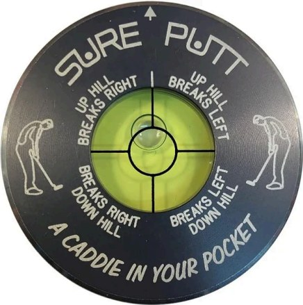 |
| EEZ-READ Green Reader | Ranges from $18.99 to $19.99.13 | 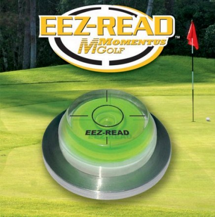 |
| BreakMaster Digital Green Reader | Typically around $120-15014 | 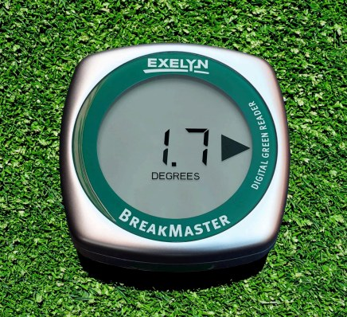 |
| JEK Digital Level | $4015 | 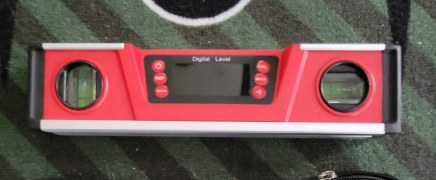 |
| Mosey Golf Green Reader | Typically around $11.5016 | 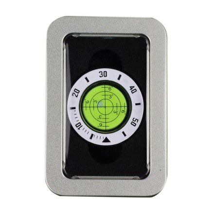 |
Current solutions have a wide range of prices, with some costing as low as $11 and some going for as high as $150. Products that are on the lower price range do not have the proper technology to be accurate and as effective at green reading as the green reader the group is creating, which is why the green reader being created is going to be priced on the higher end of that range.
Product Usability/How will the product fit into the market
The solution would fit into the market very well, helping golfers improve their putting game. Golfers, practice facilities, and golf coaches all could take advantage of and benefit from this solution. This solution will be a more accurate and efficient solution than existing solutions, utilizing laser technology to show the golfer exactly where to putt rather than just simply having a less accurate arrow point the golfer in the correct direction. The product may be of higher price, but it has components that current solutions do not have.
Product Manufacture / Distribution
Manufacturing Cost per Unit: $68.88
| Component | Cost per unit |
|---|---|
| Arduino Uno R4 Minima 32 Bit Microcontroller | $19.99 per unit.17 |
| Inland KS0209 9g Servo Motor | $6.99 per unit.18 |
| 0.96 Inch LED Display 3 PCS (Enough to make 3 Units) $10 | $3.33 per unit.19 |
| Accelerometer Sensor Module | $9.00 per unit.20 |
| Switch Tactile Push Button 20 PCS (Enough to make 10 Units) $7 | $0.70 per unit.21 |
| 6V Power Box Battery Holder Case | $6.99 per unit.22 |
| 520 nm Laser Module | $16.99 per unit.23 |
| Mini Micro Slide Toggle Switch 20 pcs (Enough to make 20 Units) $5.99 | $0.30 per unit.24 |
| Mini Breadboard kit 6 Pcs, including 400 wires (Enough for 3 Units) $8.99 | $3.00 per unit.25 |
| 5 Volt Regulator (Enough to make 10 units) $12.99 | $1.30 per unit.26 |
| Screws and Spacers kit 260 pcs (Enough for 26 units) $7.58 | $0.29 per unit.27 |
Estimated Wholesale price: $48.22
- The items listed above are bought mostly individually and from Amazon.
- Wholesale prices are typically at least 30% cheaper, sometimes reaching around 50-60% when items are bought in bulk.
- The product, 30% cheaper, would be around $50 dollars, so the group is confident that if the parts are bought wholesale, the price of the product will be at a maximum of $50.
Suggested retail price: $100
- To maintain a profitable margin, the product will be sold at $100, keeping it not above 100 dollars, while still maintaining a sizable profit when considering what the wholesale price of the product will be.
- As shown in the figure below, 70% of respondents did not want the product to exceed $100, making it clear that stakeholders and golfers want the product to be affordable.

How will the product be marketed?
- The product will be marketed initially through social media, as using social media will keep marketing prices at essentially zero.
- The product will be sold through an online storefront as well as locally, costing the team a very minimal amount of money so that all of the profit can be invested back into the company
- As the product attracts attention, the team will begin to sell the product at large developed stores such as Dicks Sporting Goods and PGA Tour Superstore, as this is where golfers of all skill levels buy a multitude of products.
V. Conclusion
The development of this digital green reader is a viable and achievable solution to the problem of amateur golfers reading greens. The market for this solution is very large. With the golf population growing, more and more people will be open to purchasing anything that could aid in the development of their game, especially a product that is unlike anything currently on the market. As for the development, all necessary tools and information have been acquired. All components and materials necessary for the physical build are ready and available, along with any tools/software needed to produce a prototype. Additionally, the team is educated on all necessary principles needed to build a prototype. Foundations on the engineering process, scientific principles, and all mathematical topics needed to form a prototype are available. There is immense organization within the team, ensuring the success of the development of this device, avoiding any miscommunication or confusion. Finally, it has been ensured that this product meets all necessary legal rules and regulations. Taking into account both government laws (FDA) and the rules of golf (USGA), ensuring a product that can be sold on the public market.
-
Cunningham, Kevin. “Here’s How Your Handicap Index Stacks up against Golfers in the United States.” Golf, 9 Sept. 2020, golf.com/news/how-your-handicap-index-compares/. ↩
-
“S7.” Indicate Technologies, indicatetechnologies.com/products/s7. Accessed 2 Mar. 2026. ↩
-
“Laser Products and Instruments.” U.S. Food and Drug Administration, 13 Nov. 2024, www.fda.gov/radiation-emitting-products/home-business-and-entertainment-products/laser-products-and-instruments. ↩
-
“Part 5 – Rule 1: Distance-Measuring Devices.” United States Golf Association, 2019, www.usga.org/equipment-standards/equipment-rules-2019/equipment-rules/part-5-rule-1.html. ↩
-
Kharrati, Katelin. “Custom Market Insights.” Custom Market Insights, 26 Mar. 2024, www.custommarketinsights.com/press-releases/golf-training-aids-market-size/. ↩↩
-
Kharrati, Katelin. “Custom Market Insights.” Custom Market Insights, 26 Mar. 2024, www.custommarketinsights.com/press-releases/golf-training-aids-market-size/. ↩
-
“Demographics: Bench Craft Company.” Demographics | Bench Craft Company, www.benchcraftcompany.com/demographics. Accessed 4 Mar. 2026. ↩
-
“Demographics: Bench Craft Company.” Demographics | Bench Craft Company, www.benchcraftcompany.com/demographics. Accessed 4 Mar. 2026. ↩
-
NGF. “A New Age in Golf?” National Golf Foundation, 10 Oct. 2024, www.ngf.org/short-game/a-new-age-in-golf/. ↩
-
Kharrati, Katelin. “Custom Market Insights.” Custom Market Insights, 26 Mar. 2024, www.custommarketinsights.com/press-releases/golf-training-aids-market-size/. ↩↩↩
-
Admin. “Latest Golf Stats. How Many People Play Golf in the U.S.?” Great Gorge Golf Club, 11 Dec. 2025, greatgorgegolfclub.com/latest-golf-stats-us/. ↩
-
“Sure Putt Pro Golf Green Reader - Gunmetal.” Sureputtgolf.com, 18 Sept. 2024, sureputtgolf.com/products/sure-putt-pro-golf-green-reader-gunmetal/. Accessed 6 Dec. 2025. ↩
-
“EEZ-READ Green Reader – Momentus Sports.” Momentussports.com, 19 June 2017, www.momentussports.com/product/eez-read-green-reader/. Accessed 6 Dec. 2025. ↩
-
“Breakmaster Digital Green Reader.” BreakMaster, breakmaster.com/shop/ols/products/breakmaster-digital-green-reader. Accessed 7 Dec. 2025. ↩
-
"Digital Green Reading." Old Duffer Golf, oldduffergolf.com/digital-green-reading/. ↩
-
“Mosey Golf Green Reader with Iron Box Magnetic Ball Marker High Precision Level Aid Bubble Tool Golf Putting Training Accessories.” Walmart, www.walmart.com/ip/5198752463. Accessed 7 Dec. 2025. ↩
-
“Arduino Uno R4 Minima - ABX00080.” Micro Center, www.microcenter.com/product/668289/arduino-uno-r4-minima-abx00080. Accessed 4 Mar. 2026. ↩
-
“Inland KS0209 Blue 9G Servo Motor.” Micro Center, www.microcenter.com/product/613883/inland-ks0209-blue-9g-servo-motor. Accessed 4 Mar. 2026. ↩
-
“Amazon.Com: Elegoo 3PCS 0.96 Inch OLED Display Screen Module Compact Self-Luminous SSD1306 I2C Display Mini Screens for Arduino Projects : Electronics.” Amazon.com, a.co/d/0jk2JNxY. Accessed 4 Mar. 2026. ↩
-
“Shillehtek ADXL345 Accelerometer Sensor Module: Pre-Soldered High-Precision ADXL345 Accelerometer for Arduino Projects: Reliable Accelerometer Arduino & Raspberry Pi Motion Detection Tool.” Amazon.com: Industrial & Scientific, a.co/d/05jFw91k. Accessed 4 Mar. 2026. ↩
-
“Chanzon Tact Switch Tactile Push Button Micro Momentary Switch 6x6 Mm x 6mm 2 Pin 20 Pcs Pushbutton Switches Breadboard Electronic Circuit Arduino PCB DIP Touch Switch Mini Buttons Electronics Board.” Amazon.com: Industrial & Scientific, a.co/d/08eBDRf0. Accessed 4 Mar. 2026. ↩
-
“Amazon.Com: ZRM&E 6V Power Box 4xaa Battery Holder Case with DC 5.5x2.1 Connector Mate with Barrel Jack Connector on Arduino : Electronics.” Amazon.com, a.co/d/0ebbsg6G. Accessed 4 Mar. 2026. ↩
-
“Amazon.Com: 520nm Laser Module Industrial Green Laser Line Diode Adjustable Focus 5MW Line : Industrial & Scientific.” Amazon.com, a.co/d/0fZpHPTJ. Accessed 4 Mar. 2026. ↩
-
“Amazon.Com: Mini Micro Slide Switch - 1p2t 2 Position - 20pcs SPDT Toggle Switch - Panel Mount Small High Knob Vertical for Breadboard PCB Arduino Electronic Board - (SS12F15) 5mm - Dip Miniature Slide Switch : Industrial & Scientific.” Amazon.com, a.co/d/07GoZHd9. Accessed 4 Mar. 2026. ↩
-
“Amazon.Com: BOJACK 1pcs 803 Tie Points and 1 Pcs 400 Tie Points Solderless Breadboard and 65 Pcs Flexible Breadboard Jumper Wires and 6PCS 170 Points Mini Solderless Breadboard : Industrial & Scientific.” Amazon.com, a.co/d/0bmtYr0y. Accessed 4 Mar. 2026. ↩
-
“BOJACK 10 Values 50 Pcs LM317 L7805 L7806 L7808 L7809 L7810 L7812 L7815 L7818 L7824 To-220 Package High Current Positive Voltage Regulator Assortment Kit.” Amazon.com: Industrial & Scientific, a.co/d/07aXfP6E. Accessed 4 Mar. 2026. ↩
-
“Wugongshan 260 Pcs M3 Male Female Nylon Hex Spacer Standoffs Screws Nuts, Nylon Hex Threaded Pillar Spacer Standoffs Screws Nuts Assortment Kit for PCB Motherboard Circuit Board - Black.” Amazon.com: Industrial & Scientific, a.co/d/0fIt3duF. Accessed 4 Mar. 2026. ↩